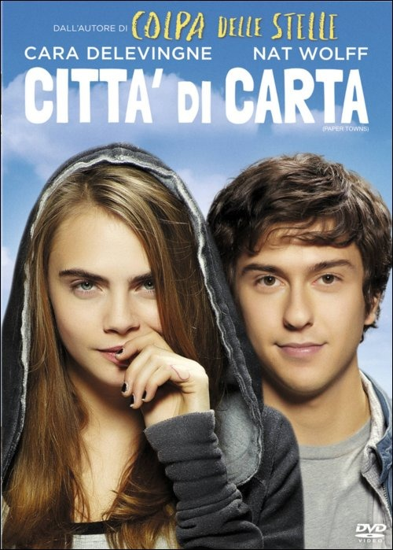
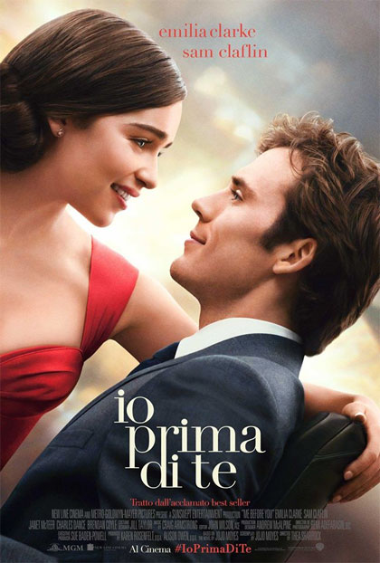
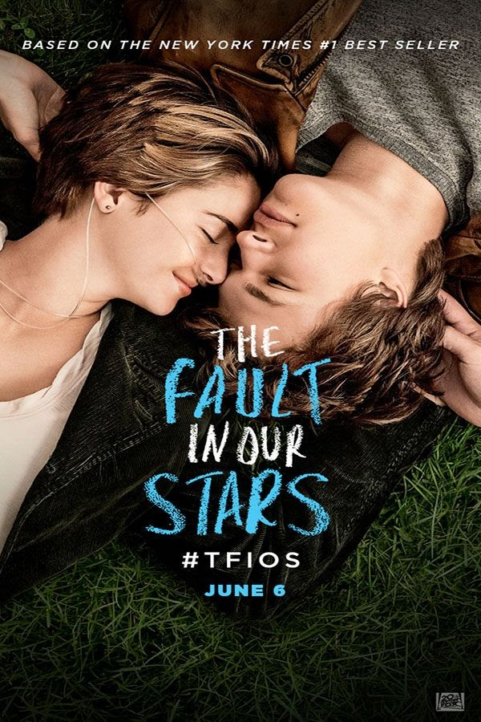

Vorrebbe essere un film romantico, ma che di romantico ha davvero poco. Invece che concentrarsi sull'amore, il film perde di vista l'obiettivo
e si concentra principalmente sul viaggio compiuto dai protagonisti. In pratica le scene in cui la Delevingne e Wolff sono insieme
sono solamente due. Diventa col passare dei minuti sempre più un film on the road incentrato sull'amicizia. L'unica cosa a salvarsi è probabilmente l'insegnamento finale che il film vuole
dare, dopo tutto ciò che accade. A parte questo resta il problema che è un film che non riesce ad essere ciò che dovrebbe essere, e si perde nel vuoto
senza riuscire ad appartenere a nessuna categoria, lasciando lo spettatore vuoto, senza che capisca il tipo di film che sta guardando. Poche emozioni trasmesse se non nessuna.
Anche gli attori sottotono e poco espressivi. Verdetto per questo film?
PASSO
Film davvero ben riuscito. Certo, i due adolescenti potrebbero lasciar pensare alla solita storia d'amore tra teenager tipica dei film americani,
ma il profondo tema trattato da questo film serve proprio a rendere il tutto diverso. Film toccante, buona la recitazione e per chi crede ancora
nel vero amore incondizionato, senza limiti, insomma per i veri romantici che ogni giorno sperano di innamorarsi questo è il film giusto. Tiferete
per la coppia dall'inizio alla fine e se cercherete di immergervi nella loro situazione vi verrà un nodo allo stomaco.
Allo stesso tempo realistico a differenza di altri film dello stesso tipo. La smielata love story non sarà fine a sè stessa ma darà spazio anche
a tante altre emozioni. Ottima anche la fotografia e la colonna sonora, molte canzoni cantate dalla protagonista stessa. Verdetto per questo film?
GUARDO

Film molto profondo. Tanti i temi importanti trattati: l'amore, il sacrificio, la malattia. Pellicola che nonostante
il romanticismo non cade nello smielato perchè vuole dare un messaggio ben più forte. Tra gli attori c'è sintonia e i loro comportamenti
sono molto più "realistici" rispetto a quelli delle coppie di tanti altri film. I personaggi mantengono la razionalità in ogni situazione e man mano
che arriviamo verso la fine continuiamo a sperare che le scelte fatte dai protagonisti siano quelle fatte per il bene della coppia. Una di quelle situazioni
da film romantico atipiche causata dalla condizione del protagonista, che ci mettono di fronte a situazioni dure e a chiederci noi cosa faremmo al loro posto.
Ineguagliabile la colonna sonora di Ed Sheeran. Verdetto per questo film?
GUARDO

Probabilmente la storia d'amore adolescienziale più famosa degli ultimi anni. Un film che ha toccato il cuore di milioni di persone.
Una di quelle storie caratterizzate dall'amore condizionato di due adolescenti, che si innamorano perdutamente come solo due ragazzi della loro età
possono fare. Entrambi però si conoscono in una situazione tragica, entrambi condividono la cosa peggiore che si possa condividere: il cancro.
Questa condizione fa guardare inesorabilmente tutto il film e tutta la situazione con occhi diversi, facendoci provare in tutti i modi una sofferenza
e una pena continua per i due protagonisti, consapevoli che molto probabilmente il tutto si dovrà concludere nel peggiore dei modi. Un film che insegna
quanto è prezioso il poco tempo che abbiamo, e quanto sia importante amare in questo poco tempo che possediamo. Verdetto per questo film?
GUARDO
Come abbia fatto questo film a diventare un fenomeno mondiale rimarrà un mistero. Tralasciando la recitazione a tratti ridicola dei due protagonisti,
sicuramente complice anche i personaggi che sono costretti ad interpretare, in questo film non ha senso nulla dall'inizio alla fine. Una storia d'amore nata
da un patto firmato tra padrone e schiava? Uno degli uomini più ricchi del pianeta che ha una stanza creata proprio per i suoi giochi erotici da fare con donne
a cui fa firmare contratti, quando potrebbe avere chi vuole senza nessun problema? Una malattia causata da un passato traumatico che lo porta a voler
possedere le donne? Queste sono solo alcune delle domande che vi farete e nulla sarà chiaro, perchè risposte davvero sensate non ce ne sono. Film da rottamare. Verdetto finale
per questo film?
PASSO